ArchPy2Modflow: Energy model with unstructured grids¶
An energy model is created on an unstructured grid
Create ArchPy model¶
[1]:
import numpy as np
import pandas as pd
import matplotlib
from matplotlib import colors
import matplotlib.pyplot as plt
import geone
import geone.covModel as gcm
import geone.imgplot3d as imgplt3
import pyvista as pv
import sys
import os
sys.path.append("../../")
#my modules
from ArchPy.base import *
from ArchPy.tpgs import *
%load_ext autoreload
%autoreload 2
[2]:
pv.set_jupyter_backend('static')
[3]:
#grid
sx = 1.5
sy = 1.5
sz = .15
x0 = 100
y0 = 100
z0 = -15
nx = 140
ny = 70
nz = 70
x1 = x0 + nx*sx
y1 = y0 + ny*sy
z1 = z0 + nz
dimensions = (nx, ny, nz)
spacing = (sx, sy, sz)
origin = (x0, y0, z0)
[4]:
## create pile
P1 = Pile(name = "P1",seed=1)
#units covmodel
covmodelD = gcm.CovModel2D(elem=[('cubic', {'w':0.6, 'r':[30,30]})])
covmodelD1 = gcm.CovModel2D(elem=[('cubic', {'w':0.2, 'r':[30,30]})])
covmodelC = gcm.CovModel2D(elem=[('cubic', {'w':0.2, 'r':[40,40]})])
covmodelB = gcm.CovModel2D(elem=[('cubic', {'w':0.6, 'r':[30,30]})])
covmodel_er = gcm.CovModel2D(elem=[('spherical', {'w':1, 'r':[50,50]})])
## facies covmodel
covmodel_SIS_C = gcm.CovModel3D(elem=[("exponential", {"w":.21,"r":[50, 50, 10]})], alpha=0, name="vario_SIS") # input variogram
covmodel_SIS_B1 = gcm.CovModel3D(elem=[("exponential", {"w":.16,"r":[50, 50, 2]})], alpha=0, name="vario_SIS") # input variogram
covmodel_SIS_B2 = gcm.CovModel3D(elem=[("exponential", {"w":.24,"r":[100, 100, 3]})], alpha=0, name="vario_SIS") # input variogram
covmodel_SIS_B3 = gcm.CovModel3D(elem=[("exponential", {"w":.19,"r":[50, 50, 2]})], alpha=0, name="vario_SIS") # input variogram
covmodel_SIS_B4 = gcm.CovModel3D(elem=[("exponential", {"w":.13,"r":[100, 100, 4]})], alpha=0, name="vario_SIS") # input variogram
lst_covmodelC=[covmodel_SIS_C] # list of covmodels to pass at the function
lst_covmodelB=[covmodel_SIS_B1, covmodel_SIS_B2, covmodel_SIS_B3, covmodel_SIS_B4] # list of covmodels to pass
#create Lithologies
dic_s_D = {"int_method" : "grf_ineq","covmodel" : covmodelD}
dic_f_D = {"f_method":"homogenous"}
D = Unit(name="D",order=1,ID = 1,color="gold",contact="onlap",surface=Surface(contact="onlap",dic_surf=dic_s_D)
,dic_facies=dic_f_D)
dic_s_C = {"int_method" : "grf_ineq","covmodel" : covmodelC, "mean":-6.5}
dic_f_C = {"f_method" : "SIS","neig" : 10, "f_covmodel":lst_covmodelC, "probability":[0.3, 0.7]}
C = Unit(name="C", order=2, ID = 2, color="blue", contact="onlap", dic_facies=dic_f_C, surface=Surface(dic_surf=dic_s_C, contact="onlap"))
dic_s_B = {"int_method" : "grf_ineq","covmodel" : covmodelB, "mean":-8.5}
dic_f_B = {"f_method":"SIS", "neig" : 10, "f_covmodel":lst_covmodelB, "probability":[0.2, 0.4, 0.25, 0.15]}
B = Unit(name="B",order=3,ID = 3,color="purple",contact="onlap",dic_facies=dic_f_B,surface=Surface(contact="onlap",dic_surf=dic_s_B))
dic_s_A = {"int_method":"grf_ineq","covmodel": covmodelB, "mean":-11}
dic_f_A = {"f_method":"homogenous"}
A = Unit(name="A",order=5,ID = 5,color="red",contact="onlap",dic_facies=dic_f_A,surface=Surface(dic_surf = dic_s_A,contact="onlap"))
#Master pile
P1.add_unit([D,C,B,A])
Unit D: Surface added for interpolation
Unit C: Surface added for interpolation
Unit B: Surface added for interpolation
Unit A: Surface added for interpolation
Stratigraphic unit D added ✅
Stratigraphic unit C added ✅
Stratigraphic unit B added ✅
Stratigraphic unit A added ✅
[5]:
# covmodels for the property model
covmodelK = gcm.CovModel3D(elem=[("exponential",{"w":0.3,"r":[30,30,10]})],alpha=-20,name="K_vario")
covmodelK2 = gcm.CovModel3D(elem=[("spherical",{"w":0.1,"r":[20,20, 5]})],alpha=0,name="K_vario_2")
facies_1 = Facies(ID = 1,name="Sand",color="yellow")
facies_2 = Facies(ID = 2,name="Gravel",color="lightgreen")
facies_3 = Facies(ID = 3,name="GM",color="blueviolet")
facies_4 = Facies(ID = 4,name="Clay",color="blue")
facies_5 = Facies(ID = 5,name="SM",color="brown")
facies_6 = Facies(ID = 6,name="Silt",color="goldenrod")
facies_7 = Facies(ID = 7,name="basement",color="red")
A.add_facies([facies_7])
B.add_facies([facies_1, facies_2, facies_3, facies_5])
D.add_facies([facies_1])
C.add_facies([facies_4, facies_6])
# property model
cm_prop1 = gcm.CovModel3D(elem = [("spherical", {"w":0.1, "r":[10,10,10]}),
("cubic", {"w":0.1, "r":[15,15,15]})])
cm_prop2 = gcm.CovModel3D(elem = [("cubic", {"w":0.2, "r":[25, 25, 5]})])
list_facies = [facies_1, facies_2, facies_3, facies_4, facies_5, facies_6, facies_7]
list_covmodels = [cm_prop2, cm_prop1, cm_prop2, cm_prop1, cm_prop2, cm_prop1, cm_prop2]
means = [-4, -2, -6, -9, -6, -7, -19]
prop_model = ArchPy.base.Prop("K",
facies = list_facies,
covmodels = list_covmodels,
means = means,
int_method = "sgs",
vmin = -10,
vmax = -1
)
cm_prop1 = gcm.CovModel3D(elem = [("spherical", {"w":0.005, "r":[10, 10, 10]})])
cm_prop2 = gcm.CovModel3D(elem = [("cubic", {"w":0.005, "r":[25, 25, 25]})])
list_facies = [facies_1, facies_2, facies_3, facies_4, facies_5, facies_6, facies_7]
list_covmodels = [cm_prop2, cm_prop1, cm_prop2, cm_prop1, cm_prop2, cm_prop1, cm_prop1]
Porosity = ArchPy.base.Prop("Porosity",
facies = list_facies,
covmodels = list_covmodels,
means = [0.2, 0.25, 0.15, 0.1, 0.15, 0.2, 0.05],
int_method = ["sgs","sgs","sgs","sgs","sgs","sgs","homogenous"],
vmin = 0,
vmax = 0.4
)
Facies basement added to unit A ✅
Facies Sand added to unit B ✅
Facies Gravel added to unit B ✅
Facies GM added to unit B ✅
Facies SM added to unit B ✅
Facies Sand added to unit D ✅
Facies Clay added to unit C ✅
Facies Silt added to unit C ✅
[6]:
top = np.ones([ny,nx])*-6
bot = np.ones([ny,nx])*z0
[7]:
T1 = Arch_table(name = "P1",seed=3)
T1.set_Pile_master(P1)
T1.add_grid(dimensions, spacing, origin, top=top,bot=bot, rotation_angle=30)
T1.add_prop([prop_model, Porosity])
Pile sets as Pile master
## Adding Grid ##
## Grid added and is now simulation grid ##
Property K added
Property Porosity added
[8]:
T1.plot_grid()
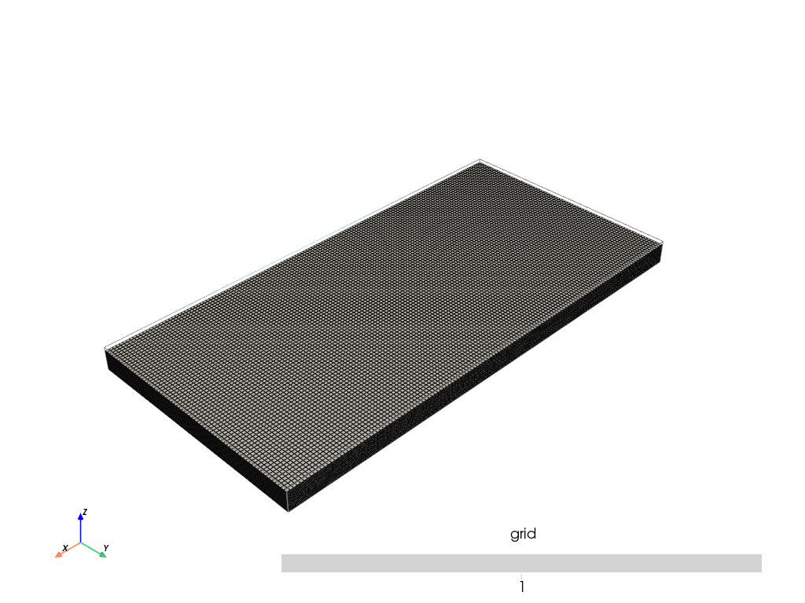
[9]:
T1.compute_surf(1)
T1.compute_facies(1)
T1.compute_prop(1)
Boreholes not processed, fully unconditional simulations will be tempted
########## PILE P1 ##########
Pile P1: ordering units
Stratigraphic units have been sorted according to order
Discrepency in the orders for units A and B
Changing orders for that they range from 1 to n
#### COMPUTING SURFACE OF UNIT A
A: time elapsed for computing surface 0.013514041900634766 s
#### COMPUTING SURFACE OF UNIT B
B: time elapsed for computing surface 0.018937110900878906 s
#### COMPUTING SURFACE OF UNIT C
C: time elapsed for computing surface 0.012012243270874023 s
#### COMPUTING SURFACE OF UNIT D
D: time elapsed for computing surface 0.0 s
Time elapsed for getting domains 0.007005453109741211 s
##########################
### 0.0644845962524414: Total time elapsed for computing surfaces ###
### Unit D: facies simulation with homogenous method ####
### Unit D - realization 0 ###
Time elapsed 0.0 s
### Unit C: facies simulation with SIS method ####
### Unit C - realization 0 ###
Only one facies covmodels for multiples facies, adapt sill to right proportions
Time elapsed 0.42 s
### Unit B: facies simulation with SIS method ####
### Unit B - realization 0 ###
Time elapsed 0.68 s
### Unit A: facies simulation with homogenous method ####
### Unit A - realization 0 ###
Time elapsed 0.0 s
### 1.1: Total time elapsed for computing facies ###
### 1 K property models will be modeled ###
### 1 K models done
### 1 Porosity property models will be modeled ###
### 1 Porosity models done
[10]:
import flopy as fp
[11]:
T1.plot_units(v_ex=3)
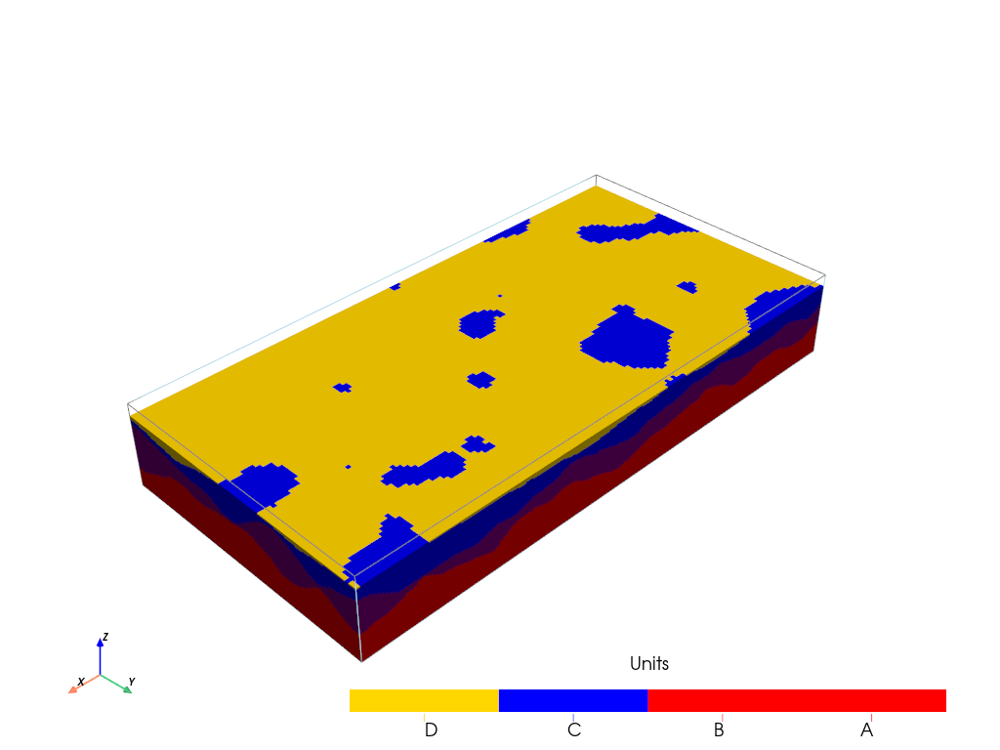
[12]:
T1.plot_facies(v_ex=3)
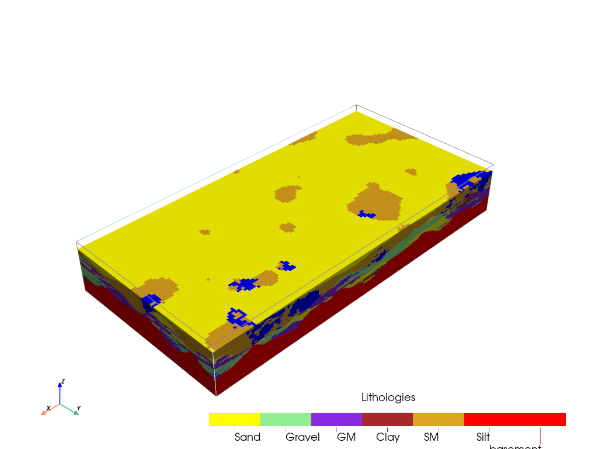
[13]:
T1.plot_prop("K", v_ex=3)
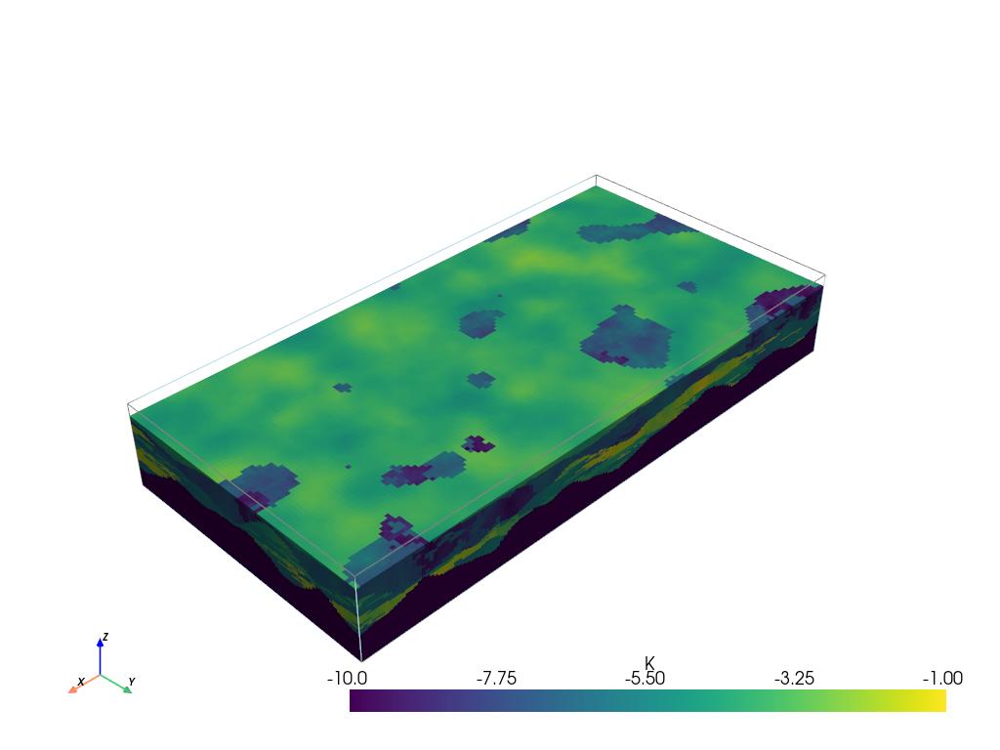
[14]:
T1.plot_prop("Porosity", v_ex=3)
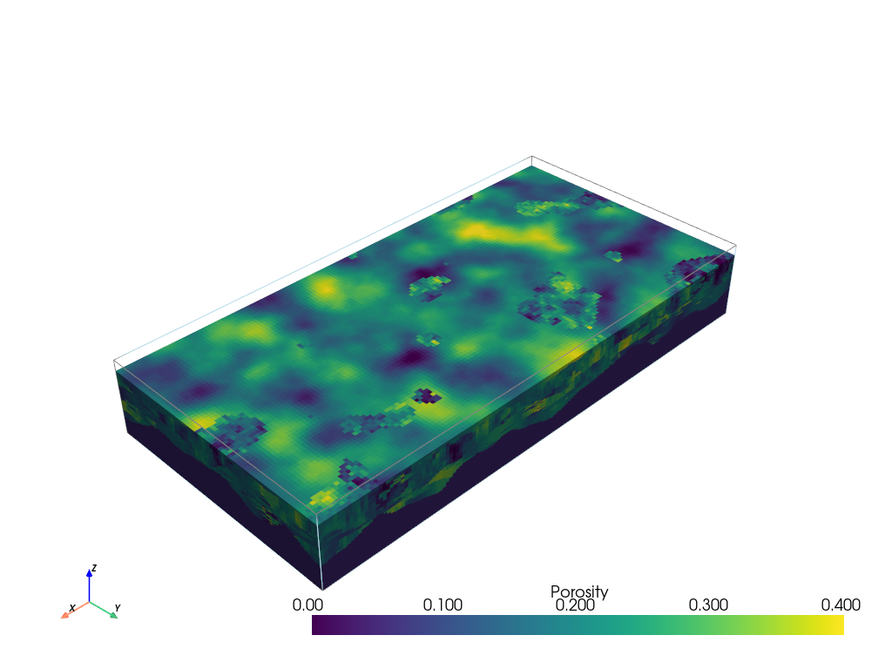
[15]:
val = T1.get_prop("K")[0, 0, 0]
im = geone.img.Img(nx=nx, ny=ny, nz=nz, sx=sx, sy=sy, sz=sz, ox=x0, oy=y0, oz=z0, nv=1, val=val)
[16]:
import ArchPy.ap_mf
from ArchPy.ap_mf import archpy2modflow, array2cellids
Create a modflow grid¶
(can be disv or disu)
[17]:
import flopy
from flopy.utils.gridgen import Gridgen
from flopy.export.vtk import Vtk
gridgen_path = "../../../../exe/gridgen.exe"
[18]:
# create a grid --> we can create a fake modflow model to use the gridgen
# 3D example
# grid dimensions
nlay = 6
nrow = 16
ncol = 24
delr = 8.5
delc = 6.
top = -6
ox = 102
oy = 105
rot_angle = T1.rot_angle
botm = np.linspace(-6.5, -15, nlay)
sim = flopy.mf6.MFSimulation(
sim_name="asdf", sim_ws="ws", exe_name="mf6")
tdis = flopy.mf6.ModflowTdis(sim, time_units="DAYS", perioddata=[[1.0, 1, 1.0]])
ms = flopy.mf6.ModflowGwf(sim, modelname="asdf", save_flows=True)
dis = flopy.mf6.ModflowGwfdis(
ms,
nlay=nlay,
nrow=nrow,
ncol=ncol,
delr=delr,
delc=delc,
top=top,
botm=botm,
xorigin=0, # gridgen will be applied on a grid with origin at 0, 0
yorigin=0,
angrot=rot_angle,
)
# create Gridgen object
g = Gridgen(ms.modelgrid, model_ws="gridgen_ws", exe_name=gridgen_path)
polygon = [
[
(200, 200),
(200, 210),
(140, 180),
(140, 180),
(200, 200),
]
]
polygon = np.array(polygon)
polygon = polygon - [ox, oy] # move the polygon to the origin
g.add_refinement_features([polygon], "polygon", 2, range(nlay))
refshp0 = "gridgen_ws/" + "rf0"
[19]:
g.build(verbose=False)
[20]:
ms.dis.remove()
disv_gridprops = g.get_gridprops_disv()
disv = flopy.mf6.ModflowGwfdisv(ms, **disv_gridprops, xorigin=ox, yorigin=oy, angrot=0) # create grid this time with the origin at ox, oy
# disu = flopy.mf6.ModflowGwfdisu(ms, **g.get_gridprops_disu6(), xorigin=ox, yorigin=oy, angrot=0) # create grid this time with the origin at ox, oy
Little check to verify that modflow model is at least smaller than the ArchPy model
[21]:
grid = ms.modelgrid
grid.plot()
# get bounding box archpy
points_box = T1.get_points_box()
# plot the bounding box
plt.plot(points_box[:, 0], points_box[:, 1], "r-")
# plt.ylim(0, 220)
# plt.xlim(-100, 220)
[21]:
[<matplotlib.lines.Line2D at 0x1255c461fd0>]
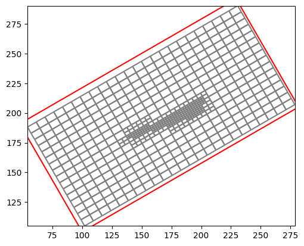
[22]:
%matplotlib inline
[23]:
import ArchPy.ap_mf
from ArchPy.ap_mf import archpy2modflow, array2cellids
from ArchPy.uppy import upscale_k, rotate_point
Flow model¶
[24]:
archpy_flow = archpy2modflow(T1, exe_name="../../../../exe/mf6.exe") # create the modflow model
archpy_flow.create_sim(grid_mode="disv", iu=0, unit_limit=None,
factor_x=7, factor_y=7, factor_z=7,
modflowgrid_props=g.get_gridprops_disv(), xorigin=ox, yorigin=oy, angrot=rot_angle) # create the simulation
Simulation created with the following parameters:
Grid mode: disv
To retrieve the simulation, use the get_sim() method
[25]:
archpy_flow.set_k("K", iu=0, ifa=0, ip=0, log=True, upscaling_method="simplified_renormalization") # set the hydraulic conductivity
[26]:
# archpy_flow.set_k("K", k = 1e-3)
[27]:
sim = archpy_flow.get_sim()
gwf = archpy_flow.get_gwf()
[28]:
grid = gwf.modelgrid
[29]:
# select areas for BC
# %matplotlib tk
# grid.plot()
# p = plt.ginput(4)
[30]:
plt.close()
%matplotlib inline
[31]:
p = np.array([(104.87903227621581, 198.4064505320487),
(108.16935487760529, 108.74515964418504),
(301.8870980344116, 197.17257955652764),
(302.2983883595853, 107.92257899383765)])
[32]:
from shapely.geometry import LineString
l1 = LineString([p[0], p[1]])
l2 = LineString([p[2], p[3]])
ix = fp.utils.gridintersect.GridIntersect(mfgrid=grid)
cid1 = ix.intersects(l1).cellids
cid2 = ix.intersects(l2).cellids
h1 = 0.3
h2 = 0
T_1 = 10 # Temperature at the boundary 1
T_2 = 10 # Temperature at the boundary 2
# create the bc (chd package on each layers)
chd_lst = []
for ilay in range(nlay):
chd_lst += [((ilay, id1), h1, T_1) for id1 in cid1]
for ilay in range(nlay):
chd_lst += [((ilay, id2), h2, T_2) for id2 in cid2]
chd = fp.mf6.ModflowGwfchd(gwf, stress_period_data=chd_lst, save_flows=True, pname="CHD", auxiliary="TEMPERATURE")
C:\Users\schorppl\.conda\envs\archpy\Lib\site-packages\flopy\utils\gridintersect.py:936: DeprecationWarning: In the future this function will return a dataframe by default. Set dataframe=True to adopt future behavior and silence this warning. Set dataframe=False to silence this warning and maintain old behavior
warnings.warn(
C:\Users\schorppl\.conda\envs\archpy\Lib\site-packages\flopy\utils\gridintersect.py:936: DeprecationWarning: In the future this function will return a dataframe by default. Set dataframe=True to adopt future behavior and silence this warning. Set dataframe=False to silence this warning and maintain old behavior
warnings.warn(
Let’s add a well that injects some cold water into the aquifer. Here to determine the cell of the well, we use the grid.intersect method.
Note: Before doing operation with it, the grid retrieved from the archpy2modflow model needs to be rotated into its original position. This is done by using the
grid.set_coord_info(angrot=0)command.
This might be weird to set the rotation angle to 0 to actually turn the grid back to its original position, but this is because the grid actually already contains the rotation information inside the coordinates of the vertices
The grid should be rotated back after the intersection operation (grid.set_coord_info(angrot=ang_rot)).
[33]:
# add an injection well in the middle of the model
well_data = []
Q_well = 0.00005 # m3/s
T_well = 7 # temperature of the injected water
# determine the cell id of the well location
grid = gwf.modelgrid
wel_coordinates = np.array([145, 185, -10]) # coordinates of the well
ang_org = grid.angrot # get the original angle of the grid
grid.set_coord_info(angrot=0)
cellid_well = grid.intersect(*wel_coordinates[:3]) # get the cell id of the well location
print(gwf.npf.k.array[cellid_well]) # check the hydraulic conductivity of the well cell
grid.set_coord_info(angrot=ang_org) # set the original angle of the grid back
well_data.append((cellid_well, Q_well, T_well))
wel = fp.mf6.ModflowGwfwel(gwf, stress_period_data=well_data, save_flows=True, auxiliary="TEMPERATURE", pname="WEL-INJ")
0.0007633965379726459
[34]:
sim.write_simulation()
sim.run_simulation()
writing simulation...
writing simulation name file...
writing simulation tdis package...
writing solution package ims_-1...
writing model test...
writing model name file...
writing package disv...
writing package ic...
writing package oc...
writing package npf...
writing package chd...
INFORMATION: maxbound in ('', 'chd', 'dimensions') changed to 192 based on size of stress_period_data
writing package wel-inj...
INFORMATION: maxbound in ('', 'wel', 'dimensions') changed to 1 based on size of stress_period_data
FloPy is using the following executable to run the model: \\home\schorppl$\exe\mf6.exe
MODFLOW 6
U.S. GEOLOGICAL SURVEY MODULAR HYDROLOGIC MODEL
VERSION 6.7.0 02/05/2026
MODFLOW 6 compiled Feb 05 2026 22:36:44 with Intel(R) Fortran Intel(R) 64
Compiler Classic for applications running on Intel(R) 64, Version 2021.6.0
Build 20220226_000000
This software has been approved for release by the U.S. Geological
Survey (USGS). Although the software has been subjected to rigorous
review, the USGS reserves the right to update the software as needed
pursuant to further analysis and review. No warranty, expressed or
implied, is made by the USGS or the U.S. Government as to the
functionality of the software and related material nor shall the
fact of release constitute any such warranty. Furthermore, the
software is released on condition that neither the USGS nor the U.S.
Government shall be held liable for any damages resulting from its
authorized or unauthorized use. Also refer to the USGS Water
Resources Software User Rights Notice for complete use, copyright,
and distribution information.
MODFLOW runs in SEQUENTIAL mode
Run start date and time (yyyy/mm/dd hh:mm:ss): 2026/04/01 10:41:14
Writing simulation list file: mfsim.lst
Using Simulation name file: mfsim.nam
Solving: Stress period: 1 Time step: 1
Run end date and time (yyyy/mm/dd hh:mm:ss): 2026/04/01 10:41:15
Elapsed run time: 0.154 Seconds
Normal termination of simulation.
[34]:
(True, [])
[35]:
heads = archpy_flow.get_heads(kstpkper=(0, 0))
heads[heads == 1e30] = np.nan
cobj = gwf.output.budget()
qx, qy, qz = fp.utils.postprocessing.get_specific_discharge(
cobj.get_data(text="DATA-SPDIS", kstpkper=(0, 0))[0], gwf)
import flopy
from flopy.plot import PlotMapView
mapview = PlotMapView(model=gwf, layer=2)
quadmesh = mapview.plot_array(heads, cmap="Blues")
quadmesh = mapview.contour_array(heads, cmap="jet", levels=10)
# quadmesh = mapview.plot_array(np.log10(gwf.npf.k.array), cmap="viridis")
# mapview.plot_vector(qx, qy, color="black", istep=3, jstep=3)
mapview.plot_bc("CHD", color="red")
mapview.plot_grid(alpha=.1, color="black")
# colorbar
plt.colorbar(quadmesh, shrink=0.5, aspect=10)
[35]:
<matplotlib.colorbar.Colorbar at 0x125c55492d0>
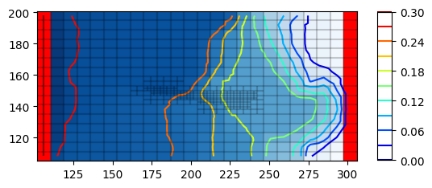
Let’s do some particle tracking into this model
For convenience, the modelgrid is rotated in its original position. Note that this implies to set the rotation angle to 0. This is not intuitive but it’s because the vertices of the grid already integrate the rotation. Warning, do not rotate the grid in the original modflow model, create a copy first.
[36]:
import copy
gwf_copy = copy.deepcopy(gwf)
grid = gwf_copy.modelgrid
grid.set_coord_info(angrot=0)
[37]:
import ArchPy.ap_mf
Draw 100 particles in the model domain.
[38]:
n = 100
xp = np.random.uniform(75, 145, n)
yp = np.random.uniform(155, 195, n)
zp = np.random.uniform(-6, -15, n)
list_p_coords = []
for i in range(n):
list_p_coords.append((xp[i], yp[i], zp[i]))
plt.scatter(xp, yp, c="red", s=3)
grid.plot()
[38]:
<matplotlib.collections.LineCollection at 0x125a85b8c10>
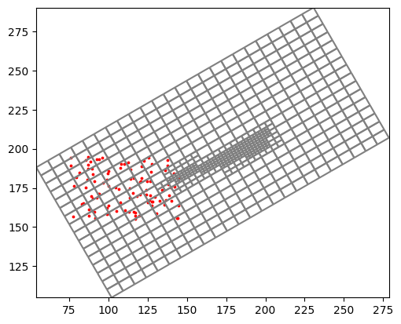
Create a prt model
[39]:
archpy_flow.prt_create(prt_name="test_prt", workspace="ws_prt", trackdir="forward", list_p_coords=list_p_coords)
archpy_flow.set_porosity(prop_key="Porosity", iu=0, ifa=0, ip=0)
archpy_flow.prt_run(silent=False)
writing simulation...
writing simulation name file...
writing simulation tdis package...
writing solution package ems...
writing model test_prt...
writing model name file...
writing package mip...
writing package disv...
writing package prp...
writing package oc...
writing package fmi...
FloPy is using the following executable to run the model: \\home\schorppl$\exe\mf6.exe
MODFLOW 6
U.S. GEOLOGICAL SURVEY MODULAR HYDROLOGIC MODEL
VERSION 6.7.0 02/05/2026
MODFLOW 6 compiled Feb 05 2026 22:36:44 with Intel(R) Fortran Intel(R) 64
Compiler Classic for applications running on Intel(R) 64, Version 2021.6.0
Build 20220226_000000
This software has been approved for release by the U.S. Geological
Survey (USGS). Although the software has been subjected to rigorous
review, the USGS reserves the right to update the software as needed
pursuant to further analysis and review. No warranty, expressed or
implied, is made by the USGS or the U.S. Government as to the
functionality of the software and related material nor shall the
fact of release constitute any such warranty. Furthermore, the
software is released on condition that neither the USGS nor the U.S.
Government shall be held liable for any damages resulting from its
authorized or unauthorized use. Also refer to the USGS Water
Resources Software User Rights Notice for complete use, copyright,
and distribution information.
MODFLOW runs in SEQUENTIAL mode
Run start date and time (yyyy/mm/dd hh:mm:ss): 2026/04/01 10:41:16
Writing simulation list file: mfsim.lst
Using Simulation name file: mfsim.nam
Solving: Stress period: 1 Time step: 1
Run end date and time (yyyy/mm/dd hh:mm:ss): 2026/04/01 10:41:16
Elapsed run time: 0.176 Seconds
Normal termination of simulation.
Plot the pathlines on the grid
[40]:
grid.plot()
for i in range(100):
path = archpy_flow.prt_get_pathlines(i_particle=i+1)
plt.plot(path["x"], path["y"])
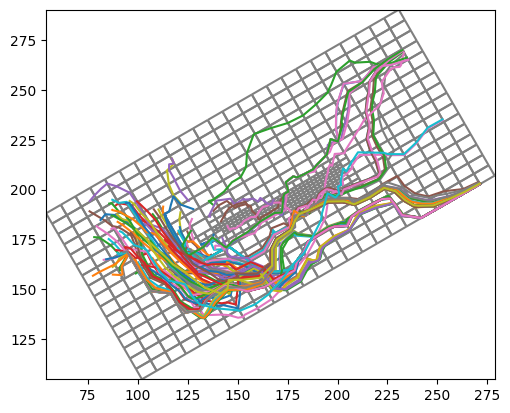
Heat model¶
[41]:
archpy_flow.create_sim_energy(strt_temp=10, ktw=0.56, kts=2.5, al=10, ath1=1,
prsity=0.2, cpw=4186, cps=840, rhow=1000, rhos=2500, lhv=2.26e6)
[42]:
archpy_flow.set_cnd(alh=5, ath1=1, alv=1, xt3d_off=True)
cnd package updated
[43]:
archpy_flow.set_porosity(prop_key="Porosity", iu=0, ifa=0, ip=0)
[44]:
# set tdis
perioddata = [(86400*10000, 50, 1.2)]
archpy_flow.set_tdisgwe(perioddata)
[45]:
# set links between the flow and energy models (ssm package)
sourcerecarray = [
("CHD", "AUX", "TEMPERATURE"),
("WEL-INJ", "AUX", "TEMPERATURE"),
]
archpy_flow.create_ssm_e(sourcerecarray)
[46]:
sim_e = archpy_flow.get_sim_energy()
gwe = archpy_flow.get_gw_energy()
[47]:
sim_e.write_simulation()
sim_e.run_simulation()
writing simulation...
writing simulation name file...
writing simulation tdis package...
writing solution package ims_-1...
writing model gwe-sim_test...
writing model name file...
writing package disv...
writing package ic...
writing package adv...
writing package est...
writing package oc...
writing package fmi...
writing package cnd...
writing package ssm...
FloPy is using the following executable to run the model: \\home\schorppl$\exe\mf6.exe
MODFLOW 6
U.S. GEOLOGICAL SURVEY MODULAR HYDROLOGIC MODEL
VERSION 6.7.0 02/05/2026
MODFLOW 6 compiled Feb 05 2026 22:36:44 with Intel(R) Fortran Intel(R) 64
Compiler Classic for applications running on Intel(R) 64, Version 2021.6.0
Build 20220226_000000
This software has been approved for release by the U.S. Geological
Survey (USGS). Although the software has been subjected to rigorous
review, the USGS reserves the right to update the software as needed
pursuant to further analysis and review. No warranty, expressed or
implied, is made by the USGS or the U.S. Government as to the
functionality of the software and related material nor shall the
fact of release constitute any such warranty. Furthermore, the
software is released on condition that neither the USGS nor the U.S.
Government shall be held liable for any damages resulting from its
authorized or unauthorized use. Also refer to the USGS Water
Resources Software User Rights Notice for complete use, copyright,
and distribution information.
MODFLOW runs in SEQUENTIAL mode
Run start date and time (yyyy/mm/dd hh:mm:ss): 2026/04/01 10:41:19
Writing simulation list file: mfsim.lst
Using Simulation name file: mfsim.nam
Solving: Stress period: 1 Time step: 1
Solving: Stress period: 1 Time step: 2
Solving: Stress period: 1 Time step: 3
Solving: Stress period: 1 Time step: 4
Solving: Stress period: 1 Time step: 5
Solving: Stress period: 1 Time step: 6
Solving: Stress period: 1 Time step: 7
Solving: Stress period: 1 Time step: 8
Solving: Stress period: 1 Time step: 9
Solving: Stress period: 1 Time step: 10
Solving: Stress period: 1 Time step: 11
Solving: Stress period: 1 Time step: 12
Solving: Stress period: 1 Time step: 13
Solving: Stress period: 1 Time step: 14
Solving: Stress period: 1 Time step: 15
Solving: Stress period: 1 Time step: 16
Solving: Stress period: 1 Time step: 17
Solving: Stress period: 1 Time step: 18
Solving: Stress period: 1 Time step: 19
Solving: Stress period: 1 Time step: 20
Solving: Stress period: 1 Time step: 21
Solving: Stress period: 1 Time step: 22
Solving: Stress period: 1 Time step: 23
Solving: Stress period: 1 Time step: 24
Solving: Stress period: 1 Time step: 25
Solving: Stress period: 1 Time step: 26
Solving: Stress period: 1 Time step: 27
Solving: Stress period: 1 Time step: 28
Solving: Stress period: 1 Time step: 29
Solving: Stress period: 1 Time step: 30
Solving: Stress period: 1 Time step: 31
Solving: Stress period: 1 Time step: 32
Solving: Stress period: 1 Time step: 33
Solving: Stress period: 1 Time step: 34
Solving: Stress period: 1 Time step: 35
Solving: Stress period: 1 Time step: 36
Solving: Stress period: 1 Time step: 37
Solving: Stress period: 1 Time step: 38
Solving: Stress period: 1 Time step: 39
Solving: Stress period: 1 Time step: 40
Solving: Stress period: 1 Time step: 41
Solving: Stress period: 1 Time step: 42
Solving: Stress period: 1 Time step: 43
Solving: Stress period: 1 Time step: 44
Solving: Stress period: 1 Time step: 45
Solving: Stress period: 1 Time step: 46
Solving: Stress period: 1 Time step: 47
Solving: Stress period: 1 Time step: 48
Solving: Stress period: 1 Time step: 49
Solving: Stress period: 1 Time step: 50
Run end date and time (yyyy/mm/dd hh:mm:ss): 2026/04/01 10:41:20
Elapsed run time: 0.871 Seconds
Normal termination of simulation.
[47]:
(True, [])
[48]:
grid = gwf.modelgrid
grid.set_coord_info(angrot=0)
[49]:
fig = plt.figure(figsize=(10, 5), dpi=300)
istep = 49
kstpkper = (istep, 0)
ml = fp.plot.PlotMapView(model=gwf, layer=3)
ml.plot_array(gwe.output.temperature().get_data(kstpkper), cmap="jet", vmin=7, vmax=10)
cobj = gwf.output.budget()
qx, qy, qz = fp.utils.postprocessing.get_specific_discharge(
cobj.get_data(text="DATA-SPDIS", kstpkper=(0, 0))[0], gwf)
cont = ml.contour_array(gwf.output.head().get_data((0 ,0)), levels=10, colors="white", linewidths=1, alpha=.5)
# display head values on contour lines
plt.clabel(cont, fmt="%.3f")
# ml.plot_vector(qx, qy, istep=4, jstep=4, normalize=True)
ml.plot_bc("CHD", color="red")
ml.plot_bc("WEL-INJ", color="green")
# plot cross section between two points
p1 = np.array([100, 159])
p2 = np.array([250, 235])
plt.plot([p1[0], p2[0]], [p1[1], p2[1]], "k-")
# get the cross section
fig = plt.figure(figsize=(10, 3), dpi=300)
xsect = fp.plot.PlotCrossSection(model=gwf, line={"line": [p1, p2]})
xsect.plot_array(gwe.output.temperature().get_data(kstpkper), cmap="jet", vmin=7, vmax=10)
xsect.plot_bc("CHD", color="red")
xsect.plot_grid()
[49]:
<matplotlib.collections.PatchCollection at 0x125c58bbb90>
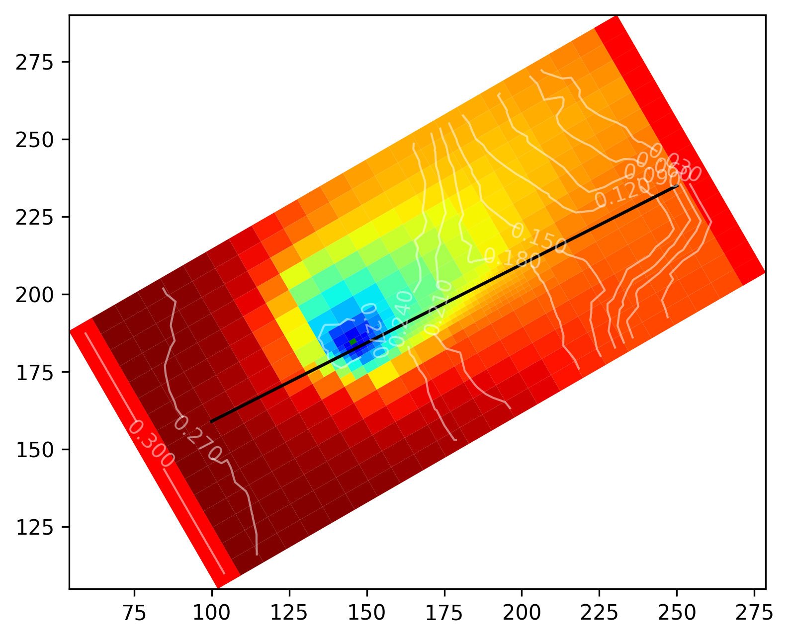
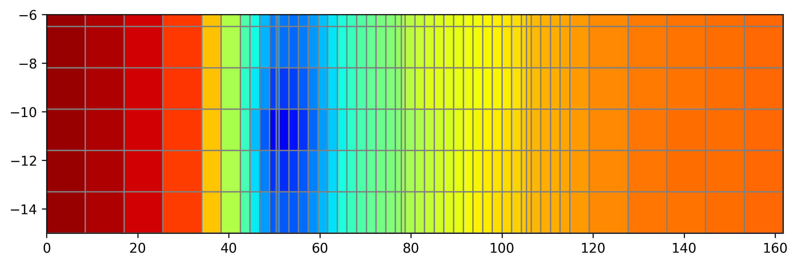
[50]:
# plot evolution of mean temperature
temp = gwe.output.temperature()
times = np.array(temp.get_times()) / 86400 # convert to days
plt.plot(times, temp.get_alldata().reshape(50, -1).mean(axis=1))
plt.xlabel("Time (days)")
plt.ylabel("Mean temperature (°C)")
[50]:
Text(0, 0.5, 'Mean temperature (°C)')
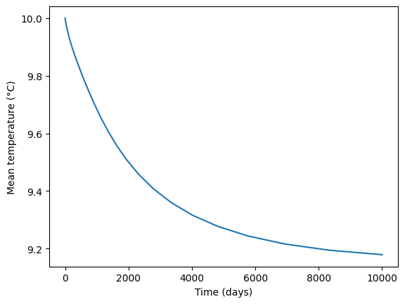